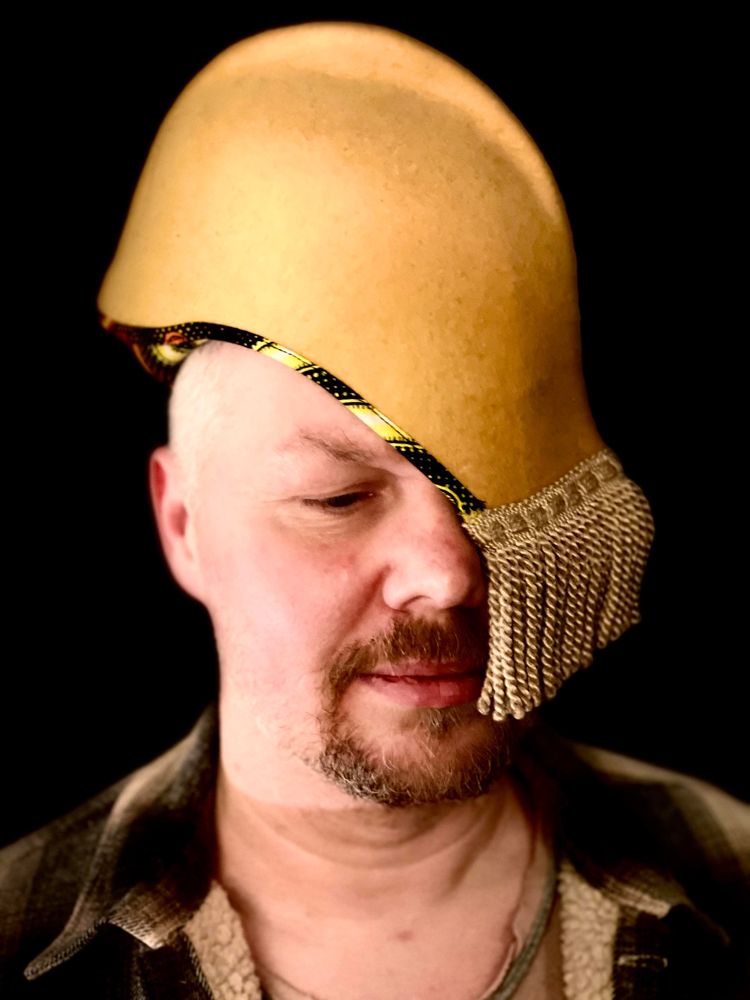

Undoubtedly one of the most exciting and ground breaking contemporary blues artists, Ramon Goose is constantly looking to extend and expand his musical horizons. Having previously performed with the likes of Eric Bibb, Boo Boo Davis, Eric Burdon and Pee Wee Ellis, Ramon has been on a musical journey over the past few years discovering and channelling the sounds of Africa & Latin America through his own unique filter and now he returns to the blues with his new trio. His new outfit launched with a performance this summer at The Ealing Blues Festival.
He will be also playing songs from his last album ‘The Long Road To Tiznit ‘ which melded old-school blues in the tradition of Skip James, John Lee Hooker and R.L. Burnside with hypnotic grooves and melodies from the Sahara, telling stories of refugees and contrabandiers, danger and freedom. The album was written whilst travelling in Morocco where Ramon channelled the spirit of the desert into his music with mesmerising effect.
Ramon first visited Africa on a musical project with Justin Adams and Julian Joseph where they visited Dakar in Senegal and worked with amazing local musicians. ‘It was a sort of epiphany,’ he said. ‘I’d never heard anything like it and it made me want to delve further into the melodies and rhythms I heard there.’ He’d met and worked with the legendary Senegalese griot Diabel Cissokho, who taught him a great deal about his musical heritage and culture. Through these experiences Ramon has developed his very own style of playing, creating a blend of music that is infectious, heart-warming and utterly intoxicating. Ramon also visited Cuba and worked with local musicians from Havana. The result is a band which blends global soundscapes by seamlessly combining rich melodies and hypnotic grooves with virtuoso blues guitar playing!
Currently Ramon is working on a new blues trio album taking his inspiration from the sounds of mid 60’s London. Ramon is joined by drummer Giampaolo Ingarsia and bassist Akos Hasznos